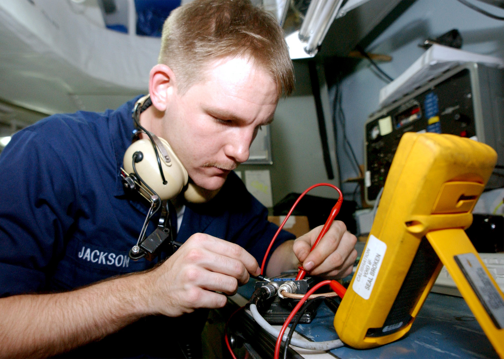

- Safety and Compliance Standards
- Operation of X-ray and EKG devices
- Routine Maintenance Procedures
- Emergency Troublshooting
At Eloheh, we don’t just sell devices; we ensure they are used effectively and safely through support services and staff training.
| Staff Training | Calibration and Installation | Maintenance and Support |
|---|---|---|
|
 | |
| We offer the best staff training in town to operate our equipment. Our staff taring includes: | Optimize the performance of our machines when we install and calibrate them up to your preferences. | We offer preventive maintenance for your machine to always work at its best and support 24/7. |